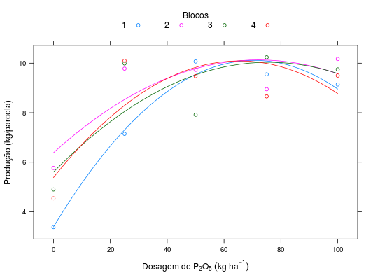

Experimento de adubação de milho feito pelos engenheiros agrônomos Glauco Pinto Viegas e Erik Smith, em blocos ao acaso, para estudar o efeito da adubação na produtividade da cultura.
Um data.frame com 20 observações e 3 variáveis, em que
blocoP2O5prodPIMENTEL-GOMES (2009), Tabela 12.2.1, pág. 232.
library(lattice) data(PimentelTb12.2.1)#> Warning: data set ‘PimentelTb12.2.1’ not foundstr(PimentelTb12.2.1)#> 'data.frame': 20 obs. of 3 variables: #> $ bloco: Factor w/ 4 levels "1","2","3","4": 1 2 3 4 1 2 3 4 1 2 ... #> $ P2O5 : int 0 0 0 0 25 25 25 25 50 50 ... #> $ prod : num 3.38 5.77 4.9 4.54 7.15 ...xyplot(prod ~ P2O5, groups = bloco, data = PimentelTb12.2.1, auto.key = list(title = "Blocos", cex.title = 1, columns = 4), ylab = "Produção (kg/parcela)", xlab = expression(Dosagem~de~P[2]*O[5]~(kg~ha^{-1})), panel = panel.superpose, degree = 2, panel.groups = function(x, y, col, col.symbol, degree, ...) { panel.xyplot(x, y, col = col.symbol, ...) xnew <- seq(min(x), max(x), length.out = 30) m0 <- lm(y ~ poly(x, degree = degree)) ynew <- predict(m0, newdata = list(x = xnew)) panel.lines(x = xnew, y = ynew, col = col.symbol) })